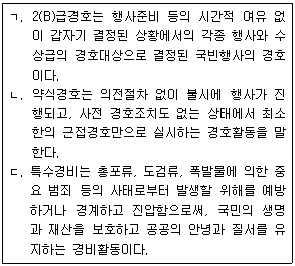
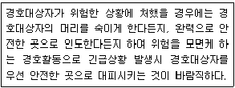
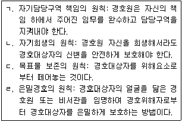
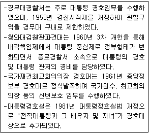
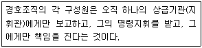
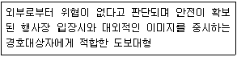
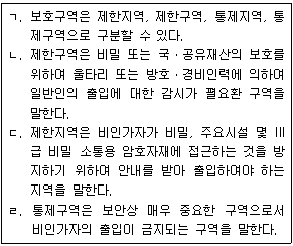

경비지도사-2차(경호학) (2017-11-18 기출문제)
1. 경호의 개념에 관한 설명으로 옳지 않은 것은?
- 경호 대상자의 생명과 재산을 보호하기 위하여 산체에 가하여지는 위해를 방지하거나 제거하고, 특정 지역을 경계ㆍ순찰 및 방비하는 등의 모든 안전 활동을 말한다.
- 형식적 의미의 경호개념은 현실적인 경호기관을 가준으로 하여 정립된 개념이다.
- 실질적 의미의 경호개념은 경호의 본질적ㆍ이론적인 입장에서 이해한 것이다.
- 대통령 등의 경호에 관한 법률에서의 경호는 호위와 경비를 구분하여 새로운 경호개념으로 정의하고 있다.
(정답률: 90%)

2. 경호 및 경비의 분류에 관한 설명으로 옳은 것을 모두 고른 것은?

- ㄱ
- ㄱ, ㄴ
- ㄴ, ㄷ
- ㄱ, ㄴ, ㄷ
(정답률: 80%)
3. 로마 가톨릭 교황 방한시 대통령경호처장이 경호등급을 결정할 경우, 사전협의해야 하는 자가 아닌 것은?
- 국가안보실장
- 외교부장관
- 국가정보원장
- 경찰청장
(정답률: 94%)
4. 다음 설명의 경호활동 원칙은?

- 방어경호의 원칙
- 예방경호의 원칙
- 두뇌경호의 원칙
- 자기희생의 원칙
(정답률: 100%)
5. 다음 중 고려 시대의 경호기관은?
- 시위부
- 성중애마
- 별시위
- 호위청
(정답률: 94%)
6. 경호의 행동원칙에 관한 설명으로 옳은 것을 모두 고른 것은?

- ㄱ
- ㄱ, ㄴ
- ㄱ, ㄴ, ㄷ
- ㄱ, ㄴ, ㄷ, ㄹ
(정답률: 95%)
7. 대한민국정부 수립이후 경호기관에 관한 설명으로 옳은 것은 모두 몇 개인가?

- 1개
- 2개
- 3개
- 4개
(정답률: 88%)
8. 경호의 주체 및 객체에 관한 설명으로 옳지 않은 것은?
- 경호주체는 경호목적을 달성하기 위해 적극적으로 일정한 경호작용을 주도적으로 실시하는 당사자를 말한다.
- 경호객체는 경호관계에서 경호주체의 상대방인 경호대상자를 말한다.
- 경호대상자의 협조를 유도하기 위해서는 경호대상자의 심리적 성향을 이해하고 적합한 기법을 개발하여 신뢰감을 얻는 것이 중요하다.
- 경호대상자가 경호에 협조적인 경우, 경호대상자 주위의 안전구역을 해제함으로써 유연한 경호임무를 완수해야 한다.
(정답률: 100%)
9. 경호조직의 특성에 해당하지 않는 것은?
- 기동성
- 통합성
- 개방성
- 전문성
(정답률: 99%)
10. 다음 설명하는 경호조직의 원칙은?

- 경호지휘단일성
- 경호체계통일성
- 경호기관단위작용
- 경호협력성
(정답률: 99%)
11. 각국의 경호 유관기관에 관한 설명으로 옳지 않은 것은?
- 미국 중앙정보국(CIA): 국제 테러조직, 적성국 동향에 대한 첩보 수집, 분석 전파, 외국 국빈방문에 따른 국내 각급 정보기관 조정을 통한 경호정보 제공
- 영국 보안국(SS): 외무성 소속으로 MI6으로 불려기도 하며, 국외경호 관련 정보의 수집ㆍ분석ㆍ처리 업무 담당
- 독일 국방보안국(MAD) : 국방성 산하 정보기관으로 군 관련 첩보 및 경호 관련 첩보 제공 임무 수행
- 프랑스 해외안전총국(DGSE): 국방성 소속으로 해외 정보 수집 및 분석 업무 수행
(정답률: 86%)
12. 경호업무 수행절차의 4단계에 관한 설명으로 옳지 않은 것은?
- 예방단계는 준비단계로서 발생할 수 있는 인적ㆍ물적 위해요소에 대한 예방책을 강구하는 단계이다.
- 대비단계는 안전활동단계로서 발생 가능한 인적ㆍ물적 위해요소에 대한 대비책을 강구하는 단계이다.
- 평가단계는 위험분석단계로서 경호효과를 평가ㆍ분석하여 경호계획을 수립하기 위한 단계이다.
- 대응단계는 실사단계로서 경호대상자에게 발생하는 위해요소에 대한 출입요소의 통제, 근접경호 등으로 즉각적인 조치를 취하는 단계이다.
(정답률: 93%)
13. 행사장 비상대책 수립시 우선적으로 고려해야 하는 요소가 아닌 것은?
- 비상장비
- 비상통로
- 비상대피소
- 비상대기차량
(정답률: 93%)
14. 출입자 통제업무 내용으로 옳지 않은 것은?
- 인적 출입관리는 행사장의 모든 출입구에 대한 검색이나 수상한 자의 색출을 목적으로 한다.
- 비표는 식별이 어렵게 하여 보안성울 강화한다.
- 참석자가 시차별로 지정된 출입통로를 통하여 입장토록 한다.
- 모든 출입요소는 지정된 출입통로를 사용하여야 하며 기타 통로는 폐쇄한다.
(정답률: 99%)
15. 선발경호의 특성에 관한 설명으로 옳지 않은 것은?
- 경호임무에 동원된 모든 부서는 각자의 기능을 발휘하면서 서로 다른 각각의 지휘체계 아래 상호보완적 임무를 수행해야 한다.
- 예방경호는 위해요소를 발견, 제거, 거부함으로써 경호행사의 안전을 확보하는 것이다.
- 선발경호는 3중경호의 원리에 입각해서 행사장을 구역별로 구분, 특성에 맞는 경호조치를 강구한다.
- 선발경호 특성 중 예비성이란 현지 지형과 상황에 맞는 대응계획과 대피계획을 수립ㆍ대비함을 말한다.
(정답률: 94%)
16. 선발경호활동의 내용으로 옳지 않은 것은?
- 출입 통제대책 강구 후 안전검측활동과 안전유지가 이루어져야 한다.
- 출입자 통제대책으로 비표운용, 주차장 지정, 검색대 운용 등을 할 수 있다.
- 경호협조회의는 해당지역 경찰서 관계자 등 행사에 참여하는 다양한 부서와 합동으로 실시하며 보안유지를 위해 1회로 제한한다.
- 선발경호안전활동의 주요요소는 출입자 통제대책 강구, 검측 및 안전확보, 비상안전대책의 강구 등이다.
(정답률: 97%)
17. 근접경호의 도보대형 형성시 고려사항이 아닌 것은?
- 주변 감제건물의 취약도
- 행사장 기후
- 행사장 사전 예방경호 수준
- 인적 취약요소와의 이격도
(정답률: 88%)
18. 근접경호 수행방법에 관한 설명으로 옳지 않은 것은?
- 근접도보대형은 장소와 상황 등 행사장 환경에 따라 유연하게 적용시켜야 한다.
- 근접경호는 신체에 의한 방호벽을 형성하되 경호대상자 행동의 자유와 프라이버시를 존중해야 한다.
- 근접경호원은 종사요원, 경호대상자와 친숙한 방문객, 수행원을 신속하게 익혀야 한다.
- 도보이동 간 근접경호원의 체위확장은 위기 시 방호효과를 극대화 할 수 있으나 평시 노출 및 위력과시의 부정적 효과로 지양해야 한다.
(정답률: 95%)
19. 기동간 경호대책의 원칙에 관한 내용으로 옳은 것은?
- 적절한 차량대형을 형성하여 방어태세를 유지한다.
- 교통흐름에 맞게 자연스런 차량운행을 한다.
- 저격에 대비하여 혼잡하거나 곡선인 도로를 이용한다.
- 기동간 경계력 분산을 방지하기 위해 전방 경계에 집중한다.
(정답률: 83%)
20. 도보이동간 근접경호의 원칙으로 옳지 않은 것은?
- 근접경호원은 상황변화에도 고정된 대형을 고수해야 한다.
- 근접경호원은 경호대상자에 이르는 모든 접근로를 차단하기 위하여 분산 배치되어야 한다.
- 위험노출 정도를 최소화하기 위해 최단거리 직선통로를 이용한다.
- 근접경호대형은 전 방위에 대한 사주경계와 신변안전을 담보할 수 있도록 행사장 여건을 고려하여 최소한의 인원으로 형성한다.
(정답률: 93%)
21. 아래 설명하는 근접경호대형은?

- 마름모 대형
- V자(역쐐기) 대형
- 원형 대형
- 쐐기 대형
(정답률: 95%)
22. 경호안전대책에 관한 설명으로 옳은 것은?
- 행사장의 인적ㆍ물적ㆍ지리적 위해요소에 대한 비표운용을 통하여 행사장의 안전을 도모한다.
- 인적 위해요소에 대해서는 행사장 주변 수색 및 위해광고물 일제정비 등을 통해 경호 취약요소를 제거한다.
- 물적 위해요소에 대해서는 금속탐지기 등을 이용한 검색을 통하여 위해물품이 행사장 내로 반입되지 못하도록 한다.
- 지리적 위해요소에 대해서는 입장 및 주차계획, 본인여부 확인을 통하여 불순분자의 행사장 내 침투 및 접근을 차단한다.
(정답률: 84%)
23. 대한민국에서 개최되는 다자간 정상회의의 경호 및 안전관리 업무를 효율적으로 수행하기 위하여 대통령 등의 경호에 관한 법률에 따라 설치되는 경호ㆍ안전 대책기구의 명칭은?
- 경호안전종합본부
- 경호안전통제단
- 경호안전대책본부
- 경호처 특별본부
(정답률: 85%)
24. 보안업무규정 시행규칙상 보호구역에 관한 설명으로 옳은 것을 모두 고른 것은?

- ㄹ
- ㄱ, ㄹ
- ㄴ, ㄷ
- ㄴ, ㄷ, ㄹ
(정답률: 82%)
25. 대통령 등의 경호에 관한 법령상 경호구역에 관한 설명으로 옳지 않은 것은?
- 대통령경호처장은 경호업무의 수행에 필요하다고 판단되는 경우 경호구역을 지정할 수 있다.
- 대통령경호처장이 경호구역을 지정할 경우 경호 목적 달성을 위한 최대한의 범위로 설정되어야 한다.
- 대통령경호처의 경호구역 중 대통령집무실ㆍ대통령관저 등은 내곽구역과 외곽구역으로 나눈다.
- 대통령경호처 소속공무원과 경호업무를 지원하는 사람은 경호목적 상 불가피하다고 인정되는 상당한 이유가 있는 경우에만 경호구역에서 안전활동을 할 수 있다.
(정답률: 92%)
26. 선발경호의 특성이 아닌 것은?
- 예비성
- 안전성
- 통합성
- 기만성
(정답률: 97%)
27. 위해기도자의 범행시도에 경호대상자 또는 위해기도자와 가장 가까이 위치한 경호원이 대응해야 한다는 경호원칙은?
- 체위확장의 원칙
- 주의력과 대응시간의 원리
- 촉수거리의 원칙
- 목표물 보존의 원칙
(정답률: 96%)
28. 우발상황에 관한 설명으로 옳지 않은 것은?
- 우발상황은 어떠한 일이 예기치 못하게 발생하는 것을 의미하며, 사전예측 불가, 극도의 혼란사태 야기, 즉응적 대응 요구, 자기보호 본능 발동 등의 특성을 갖는다.
- 우발상황 발생시 대응은 ‘경고-방호-대피’가 거의 동시에 이루어져야 한다.
- 우발상황 발생시 경호원은 경호대상자를 신속하게 안전지대로 대피시키기 위해 경호대상자에게 신체적 무리가 있더라도 과감하게 행동하여야 한다.
- 수류탄 또는 폭발물과 같은 폭발성 화기에 의해 공격받았을 때 사용되는 방호대형은 강화된 사각 대형 이다.
(정답률: 91%)
29. 다음 중 경호기만 방법으로 옳지 않은 것은?
- 일관성 있는 차량 및 기동로
- 허위흔적 표시
- 일반인처럼 자연스러운 옷차림과 행동
- 연막차장
(정답률: 96%)
30. 안전검측활동에 관한 설명으로 옳은 것은?
- 비공식 행사에서는 실시하지 않는다.
- 오감을 배제하고, 장비를 이용하여 실시한다.
- 경호대상자가 장시간 머물러 있는 곳을 먼저 실시한 후 경호대상자의 동선에 따라 순차적으로 실시한다.
- 전자제품은 분해하여 확인하되 확인이 불가능한 것은 현장에 보존한다.
(정답률: 91%)
31. 폭발물에 관한 설명으로 옳지 않은 것은?
- 폭약은 파괴적 폭발에 사용될 수 있는 것으로서 액체산소폭약, 다이너마이트 등이 있다.
- 급조폭발물은 다양한 형태로 제작 가능하며, 재사용이 가능한 장점이 있다.
- 뇌관에 사용되는 기폭제는 폭발력은 약하나 작은 충격이나 마찰, 정전기 등에 폭발하는 특성이 있다.
- 폭발물의 폭발효과는 폭풍, 진동, 열, 파편효과 등 이 나타난다.
(정답률: 94%)
32. 경호장비에 관한 설명으로 옳지 않은 것은?
- 검색장비란 위해도구나 위해물질을 찾아내는데 사용하는 장비로 금속탐지기, X-Ray 수화물 검색기 등이 있다.
- 방호장비란 경호원이 자신의 생명ㆍ신체가 위험상태에 놓였을 때 스스로를 보호하는 장비로 가스분사기, 전자충격기, 등이 있다.
- 감시장비란 경호 취약점을 보완하는 수단으로 침입 또는 범죄행위를 사전에 알아내는 역할을 하는 장비로 쌍안경, 열선감지기 등이 있다.
- 통신장비란 경호임무수행에 있어 필요한 보고 또는 연락을 위한 장비로 차량용무전기, 휴대용무전기 등이 있다.
(정답률: 84%)
33. 검측장비 중 탐지장비가 아닌 것은?
- 서치탭(search tap)
- 청진기
- 검색경
- 물포(water cannon)
(정답률: 91%)
34. 탑승시 경호예절에 관한 설명으로 옳은 것은?
- 기차의 경우 2인용 좌석일 때 창가 쪽이 상석이고 통로 쪽이 말석이다. 침대차에서는 위쪽의 침대가 상석이다.
- 비행기를 타고 내릴 때에는 상급자가 먼저 타고 먼저 내리는 것이 올바른 순서이다.
- 일반 선박의 경우 상급자가 나중에 타고 하선할 때는 먼저 내리나, 함정의 경우에는 상급자가 먼저 타고 먼저 내린다.
- 에스컬레이터 탑승시 올라갈 때는 남성이 먼저 올라가고, 내려올 때는 여성이 먼저 내려온다.
(정답률: 93%)
35. 태극기 게양일 중에 조기(弔旗)를 게양해야 하는 날은?
- 3ㆍ1절
- 제헌절
- 현충일
- 국군의 날
(정답률: 90%)
36. 경호의 일반적 환경요인으로 옳지 않은 것은?
- 경제 발전과 과학기술의 발전
- 사회구조와 국민의식 구조의 변화
- 정보의 팽창과 범죄의 다양화
- 우리나라에 대한 북한 테러 위협 증가
(정답률: 94%)
37. 경호원의 기본응급처치 요령으로 옳지 않은 것은?
- 호흡이 없을 시 즉시 심폐소생술을 실시하고, 전문의료진에게 신속하게 인계한다.
- 의식이 없을 경우에는 경호대상자를 옆으로 눕혀 이물질에 의한 질식을 예방한다.
- 가슴 및 복부 손상 시 지혈을 하고 물을 마시게 한다.
- 목 부상 시 부목 등의 도구를 이용하여 고정시켜 목의 꺽임을 방지한다.
(정답률: 95%)
38. 국민보호와 공공안전을 위한 테러방지법령상 테러위협의 정도에 따른 테러경보 4단계에 속하지 않는 것은?
- 주의
- 경계
- 심각
- 대비
(정답률: 90%)
39. 국민보호와 공공안전을 위한 테러방지법령상 국가테러대책위원회의 심의ㆍ의결사항에 해당하지 않는 것은?
- 관계기관의 대테러활동 교육ㆍ훈련의 감독 및 평가
- 국가 대테러 기본계획 등 중요 중장기 대책 추진사항
- 대테러활동에 관한 국가의 정책수립 및 평가
- 위원장이 대책위원회에서 심의ㆍ의결할 필요가 있다고 제의하는 사항
(정답률: 82%)
40. 국민보호와 공공안전을 위한 테러방지법의 내용으로 옳은 것은?
- 테러위험인물이란 테러를 실행ㆍ계획ㆍ준비하거나 테러에 참가할 목적으로 국적국이 아닌 국가의 테러단체에 가입하거나 가입하기 위하여 이동 또는 이동을 시도하는 내국인ㆍ외국인을 말한다.
- 테러수사란 대테러활동에 필요한 정보나 자료를 수집하기 위하여 현장조사ㆍ문서열람ㆍ시료채취 등을 하거나 조사대상자에게 자료제출 및 진술을 요구하는 활동을 말한다.
- 관계기관의 대테러활동으로 인한 국민의 기본권 침해 방지흘 위하여 대책위원회소속으로 대테러 인권보호관 2명을 둔다.
- 국가정보원장은 테러위험인물에 대하여 출입국ㆍ금융거래 및 통신이용 등 관련 정보를 수집할 수 있다.
(정답률: 72%)